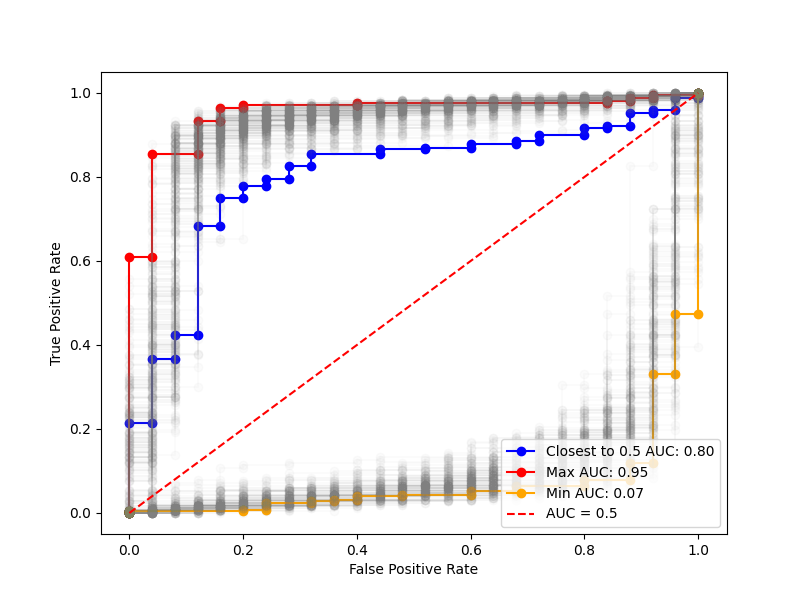
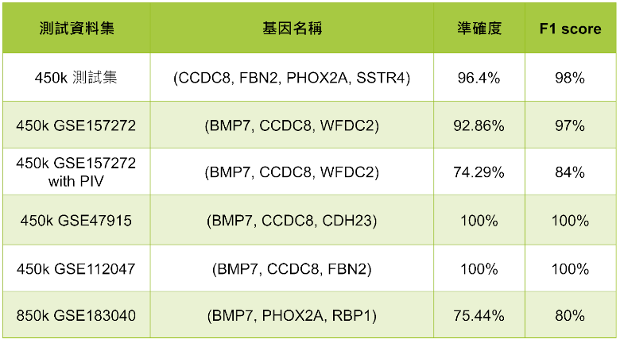

Methylation of Prostate Cancer Predict
研究摘要
本研究旨在利用DNA甲基化實現前列腺癌的早期預測。透過分析基因的甲基化程度與癌症發生的關係，以此篩選出潛在的癌症預測基因，用以解決前列腺癌的早期檢測準確性與成本問題。
研究最終找到兩個能穩定作為預測前列腺癌的基因（BMP7、CCDC8）。在僅使用三個基因做為測試的情況下，在450k測試集中能達到0.9以上的F1分數，在其它應用場景下F1分數能達到0.8~0.84（850k、PIV）。
研究動機與目標
研究動機
前列腺癌是影響男性健康的重要問題，在人口老化和高脂肪飲食等因素影響下，有日益嚴重的趨勢。目前的檢測方式存在以下問題：
- 需要經由受過專業訓練醫生評估
- 部分檢測方法可能因病人體質差異影響準確度
- 難以在癌症早期階段準確檢測
研究目標
- 構建基因篩選系統：設計並實現有效系統，篩選具潛在預測能力的基因特徵
- 基因數量優化：使用最少基因組合維持高準確度
- 基因功能分析：解析篩選基因的功能與重要性
- 癌症期數影響分析：評估不同癌症期數對模型的影響
研究方法
資料來源
- TCGA（The Cancer Genome Atlas）：美國國立衛生研究院主導的癌症研究項目
- NCBI GEO：基因表達數據平台，提供公開的基因組數據

研究整體流程圖
ChAMP套件分析流程
數據處理流程
- 使用ChAMP套件進行基礎分析
- 去除離群值與無意義數據
- 缺失數據補正
- 數據標準化
- 產生差異甲基化位點（DMP）
- 差異性甲基化分析
- 計算ΔBeta值
- 繪製火山圖分析
- 區分Hyper與Hypo區塊
ΔBeta與p值火山圖分析

ROC曲線與AUC值分析
模型訓練與特徵篩選
資料平衡處理
使用SVM-SMOTE處理資料不平衡問題，測試結果顯示其在提升Specificity方面表現最佳。
不同Oversampling方法效果比較
模型選擇
| 模型 | Accuracy | F1 score | Sensitivity | Specificity |
|---|---|---|---|---|
| Decision Tree | 0.9443 | 0.9690 | 0.9545 | 0.8387 |
| Random Forest | 0.9600 | 0.9777 | 0.9642 | 0.9166 |
| XGBoost | 0.9689 | 0.9828 | 0.9763 | 0.8920 |
研究結果與分析
測試資料集驗證
- GSE47915：4個Gleason 6腫瘤樣本及4個正常組織樣本
- GSE112047：31個腫瘤樣本及16個正常組織樣本
- GSE157272：54個多種前列腺病理狀況樣本
- GSE183040：56個腫瘤樣本及58個正常組織樣本（850k平台）

各測試集預測結果分析
癌症期數分析
不同期數癌症的甲基化模式分析
結論與未來展望
主要成果
- 成功識別兩個關鍵基因：BMP7和CCDC8
- 450k測試集達到0.9以上F1分數
- 在850k平台驗證可行性
- 建立完整的基因篩選系統
未來研究方向
- 強化早期癌症預測能力
- 優化特徵篩選策略
- 改進早期檢測準確度
- 擴展至液態活檢應用
- 研究血液/尿液樣本的應用
- 開發無創檢測方法